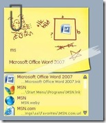

कम्प्यूटर पर काम करते समय आपको अगर एम एस ऑफिस/ वर्ड खोलना हो तो आप क्या करेंगे? सबसे पहले Start पर क्लिक करेंगे उसके बाद आप Programme=>Microsoft Office पर क्लिक करना होगा। यानि ज्यादा समय खर्च होगा। ऐसी और भी कई एप्लीकेशन होंगी जिसे आपको programme में खोजना पड़ेगा। अगर आप इस झंझट से बचना चाहें तो आपके लिये एक मजेदार टूल प्रस्तुत है। इस टूल का नाम है "लांची".. आईये फोटो में देखते हैं।
देखिये बरहा चालू करने के लिये इस टूल में जाकर मात्र Bar टाइप करने से यहाँ उसकी एप्लीकेशन दिखने लगी, अब मैं जैसे ही इन्टर की दबाऊंगा बरहा एप्लीकेशन चालू हो जायेगी।

इस चित्र में देखिये एम एस वर्ड खोलने के लिये मैने बस एम एस ही लिखा है और नीचे माइक्रोसोफ्ट वर्ड दिखने लगा। इसी तरह एक्सेल आदि चुनी जा सकती है। 

यह यूनिकोड को भी सपोर्ट करता है इसमें कोई भी भी शब्द लिख कर उसे सीधे गूगल में खोजा जा सकता है जैसे मैं यहाँ ब्लॉगवाणी को खोज रहा हूँ ।

इस टूल को डाउनलोड करने और इन्स्टाल करने के बाद यह चुपचाप छिपकर काम करता रहता है। जब भी आपको कोई एप्लीकेशन खोलनी हो बस एक बार Alt और स्पेसबार दबा दीजिये यह टूल सामने दिखने लगेगा। जहाँ कर्सर ब्लिंक हो रहा है आप अपनी मनपसन्द एप्लीकेशन के एकाद शब्द लिखिये ( मसलन पावर पोइन्ट के लिये Power , एक्सेल के लिये Exc आदि) और जैसे ही एप्लीकेशन दिखे आप इन्टर मार दीजिये, बस कुछ ही सैकण्ड में एप्लीकेशन खुल जायेगी। इससे एप्लीक्शन खोलने पर मुझे कुछ ज्यादा तेज खुलने की गति कुछ ज्यादा तेज महसूस होती है।
इस पर राइट क्लिक कर आप मनचाही थीम चुन सकते हैं, गूगल की बजाये कोई और सर्च इन्जिन चुन सकते हैं। बहुत सी सुविधायें हैं इसमें। आप इन सुविधाओं को चुने या ना चुने परन्तु जो डीफॉल्ट सुविधायें है वे तो आपको मिलेंगी ही।
तो मित्रों आपको लगता है कि यह टूल आपके काम आ सकता है तो आप इस टूल लांची को नीचे दिये गये लिंक से डाउनलोड कर सकते हैं, एक बार इसे आजमा कर देखिये बहुत काम की चीज है। और हाँ लीनीक्स प्रेमियों के लिये भी यह उपलब्ध है।